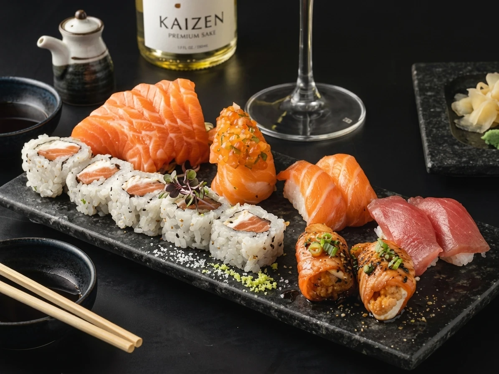

Explore os sabores
Passe pelas categorias e descubra cada combinação.

O JAPÃO MAIS PERTO DE VOCÊ
Do primeiro olhar à última peça.
Encontre a combinação que dá vontade
de repetir.
CONHEÇA O JAPAN
O SABOR ESTÁ NOS DETALHES
A delicadeza de uma peça. O contraste de texturas. A combinação que surpreende. No Japan, o convite é descobrir a culinária japonesa no seu ritmo.
Pedir agoraDA ESCOLHA À PRIMEIRA PEÇA
Passe pelas categorias e descubra cada combinação.
Abra um prato para conferir sua composição e o valor ilustrativo.
O contato para pedidos será disponibilizado em breve.
JAPAN · SÃO PAULO
Sua próxima escolha pode começar por aqui.